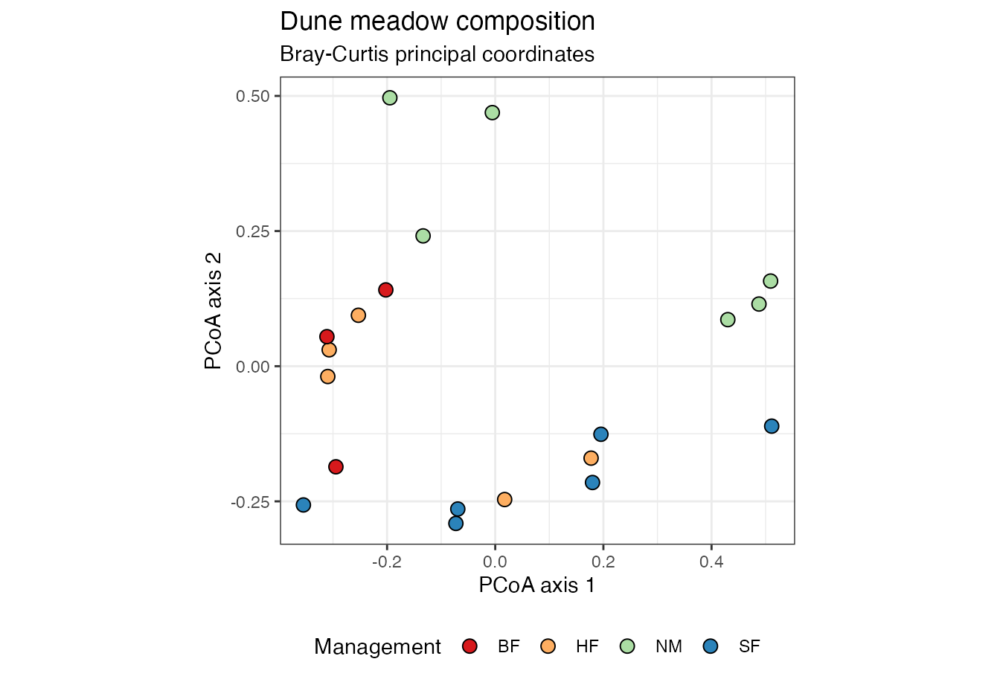

1. Getting started with distmer
getting-started.RmdWhat is distmer?
distmer is a framework for distance-based
mixed-effects models with permutational inference. It combines
two ideas that are already familiar to many ecologists:
- PERMANOVA’s partitioning of community variation in the space defined by a chosen dissimilarity; and
- mixed-model formula notation for describing fixed effects, experimental units, nesting, blocks, repeated sampling, and random slopes.
The formula looks like an lmer() formula, but
distmer is not a likelihood or REML wrapper around
lme4. It works from a dissimilarity matrix. Fixed terms
describe the ecological effects of interest; random terms identify the
experimental units and covariance strata that determine a valid
denominator and permutation action.
This gives two useful reference points:
- without random effects, a supported
distmermodel reduces to conventional PERMANOVA; - with a univariate Euclidean response, supported designs reproduce their classical linear- or mixed-model tests.
The aim is therefore not to detach the method from PERMANOVA. It is to make distance-based inference within a mixed-model workflow while keeping the denominator and exchangeability assumptions visible.
Example: a dune meadow community model
The vegan::dune data contain plant abundances from 20
dune meadows. We will ask whether community composition differs among
management regimes.
data(dune, dune.env, package = "vegan")
bray <- vegdist(dune, method = "bray")
table(dune.env$Management)
#>
#> BF HF NM SF
#> 3 5 6 6PCoA:
points <- as.data.frame(cmdscale(bray, k = 2))
names(points) <- c("Axis1", "Axis2")
points$Management <- dune.env$Management
ggplot(points, aes(Axis1, Axis2, fill = Management)) +
geom_point(size = 3, shape=21) +
labs(
title = "Dune meadow composition",
subtitle = "Bray-Curtis principal coordinates",
x = "PCoA axis 1", y = "PCoA axis 2"
) +
theme_bw() +
scale_fill_brewer(palette="Spectral") +
coord_fixed() +
theme(legend.position = "bottom")
Using distmer, the dissimilarity matrix is placed on the
left of the formula, just as the response would be in lm()
or lmer():
fit <- permanova(
bray ~ Management,
data = dune.env,
permutations = 999,
seed = 2026
)
fit$table |>
kbl(
digits = 3,
caption = "Model summary",
booktabs = TRUE # nice rules for LaTeX/PDF
) |>
kable_styling(
full_width = FALSE,
bootstrap_options = c("striped", "hover", "condensed"), # HTML
latex_options = c("hold_position") # PDF
)| Source | df | SS | MS | Pseudo-F | P(perm) | P(MC) | Unique perms |
|---|---|---|---|---|---|---|---|
| Management | 3 | 1.469 | 0.490 | 2.767 | 0.004 | 0.004 | 999 |
| Residual | 16 | 2.830 | 0.177 | NA | NA | NA | NA |
| Total | 19 | 4.299 | NA | NA | NA | NA | NA |
Pseudo-F measures the separation attributable to
management relative to the appropriate residual variation.
P(perm) is the proportion of permitted null rearrangements
at least as extreme as the observed value. P(MC), when
shown, is a separately labelled asymptotic Monte-Carlo reference; the
design-aware permutation result remains the primary inference.
For this fixed one-factor model, the observed statistic agrees with
vegan::adonis2():
Formula language
Fixed terms use ordinary R formula notation:
bray ~ management
bray ~ management + moisture
bray ~ management * season
bray ~ management + soil_pHRandom terms describe follow lmer notation:
bray ~ treatment + (1 | site)
bray ~ treatment + (1 | region/site)
bray ~ period + (1 + period | ditch)Additional guides:
-
vignette("fixed-effects"): Type I, II, and III fixed-effect questions. -
vignette("contrasts"): planned contrasts, pairwise comparisons, and multiplicity control. -
vignette("dispersion"): distance diagnostics and multivariate dispersion. -
vignette("unbalanced-mixed"): unequal cells and unequal replication. -
vignette("random-effects"): random intercepts, nesting, blocks, and random slopes, including howpermanova()represents them internally. -
vignette("validation"): reproducible analyses and independent checks.